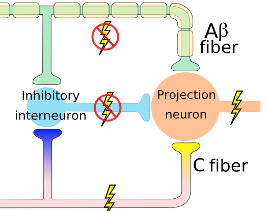
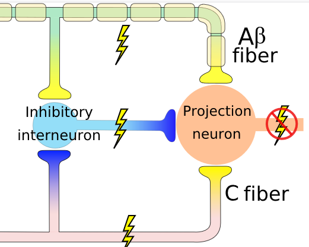
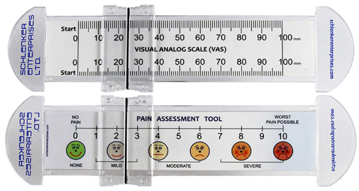
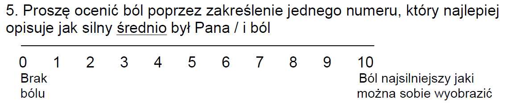

Pain, the brain and cognition
Nociception & evaluation
Krzysztof Basiński
Nociception
- Activation of pain receptors (nociceptors)
- Activation of pain pathways
- A specific pattern of nociception leads to the sensation of pain
Nociception
- Nociceptors - receptors in skin, muscles, joints etc.
- Two types of fibers carry information from nociceptors:
- Aδ - myelinated - rapid transmission
- C - not myelinated - slower transmission (second pain)
- These end in the dorsal horn
Nociceptors
- Some nociceptors respond to specific type of stimulation, eg. heat, pressure, chemical burns.
- Nociceptors differ in terms of activation threshold - some “quiet” receptors need more stimulation than others
Nociceptors
- Sensitization (not habituation) of C fibers due to prolonged stimulation
- If stimulation is long enough, more distant nociceptors become active
- Nociception may last longer than pain stimulation itself
Gate control theory (Melzack, Wall)
Gate Open
Gate control theory (Melzack, Wall)
Gate closed
Gate control theory (Melzack, Wall)
- Extentions of gate control theory state that the gate might be regulated centrally
- Unclear mechanism but some cognitive processes are implicated
VAS (Visual Analog Scale)
VAS
NRS (Numerical Rating Scale)
NRS
FLACC observational scale
- Face
- Legs
- Arms
- Cry
- Consolability
- (Children’s Hospital of Eastern Ontario Pain Scale)
Experimental pain
- One way to study pain is to make experiments
- This can help establish causality
- Need to consider ethical guidelines
Experimental pain
– Cold pressor task - I.e. 3°C water for a max of 2 minutes
Evaluation
- Pain threshold (sec)
- Pain tolerance (sec)
- Average pain intensity (NRS)
- Maximal pain intensity (NRS)
Other experimental stimuli
- Heat pain (thermodes)
- Electrical shocks